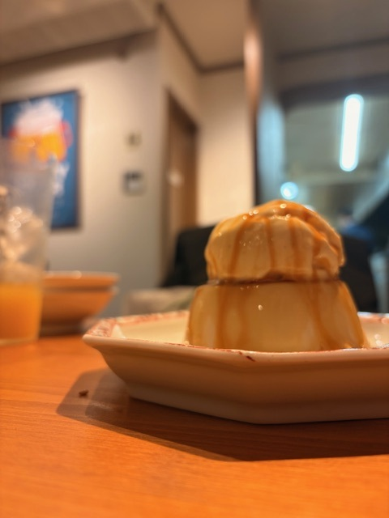
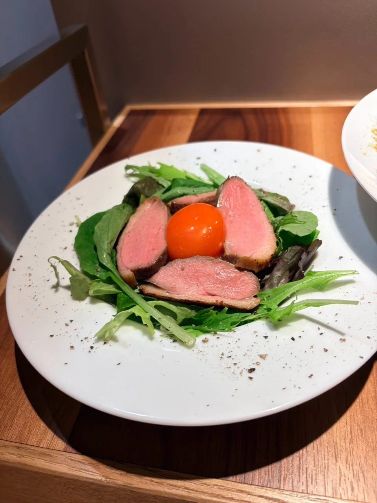
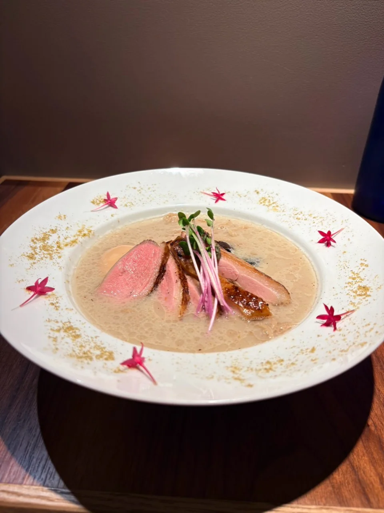
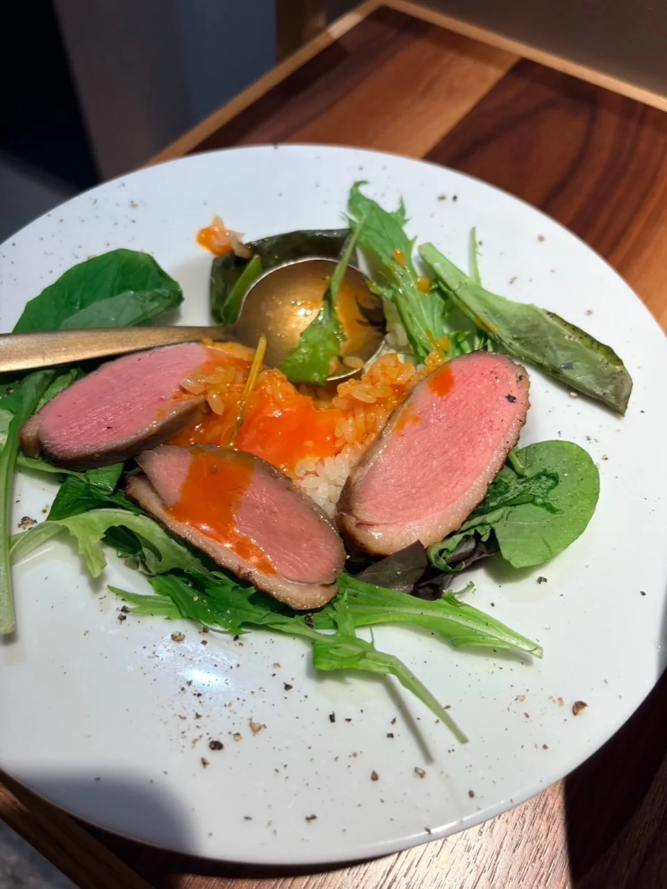
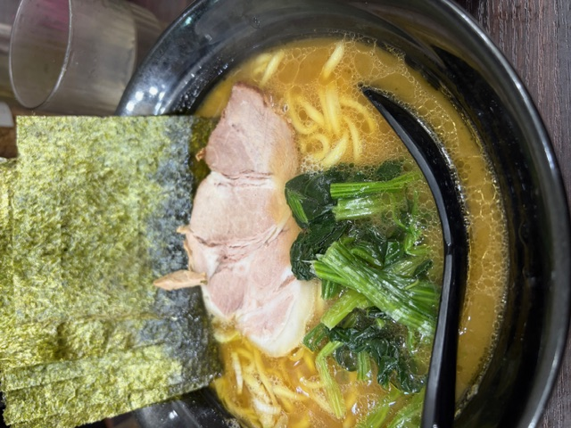
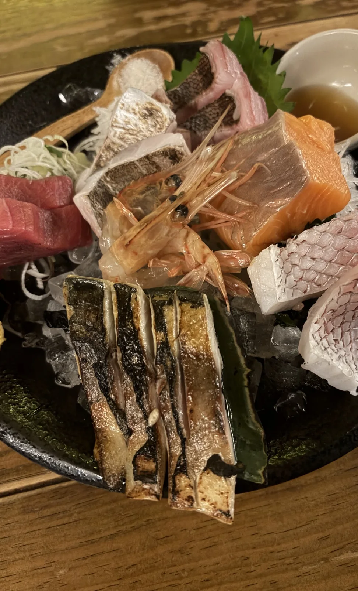

総合1位

町中華・ディナー あーちゃんべいグルメ
あーちゃんべいグルメ
Tokyo / Chiba Gourmet Guide
錦糸町・小岩を中心に、実際に食べた料理、訪問時の予算や混雑、店内の雰囲気を81店分まとめています。
Latest Photo Set
実際に訪れたお店で撮影した料理写真です。目でも楽しめる盛り付けや、料理の表情を3枚にまとめました。



Latest on Instagram
最近紹介した店舗の投稿です。写真と詳しい感想はInstagramで確認できます。
@ah_bei_gourmet を見る実食ランキング
Ah Bei's Best 3
運営者が実際に訪問したお店から、味、価格の納得感、店内の雰囲気、もう一度行きたいと思った度合いを総合して選びました。Instagramのいいね数だけで順位を決めていません。

町中華・ディナー
家系ラーメン濃厚な一杯、無料ライス、提供の早さがそろい、何度も通いたくなる安定感が魅力。
固め・濃いめのラーメンと、スープを絡めた海苔で食べる無料ライスが相性抜群です。
 ランチ・カフェ
ランチ・カフェ※順位は訪問時の個人的な体験をもとにした編集部独自の評価です。広告掲載の有無は順位に影響しません。価格・メニュー・営業情報は変更される場合があります。
Legal
当サイトはアフィリエイト広告を利用しています。詳しい表示はこちら
価格、営業時間、メニューは変更される場合があります。来店前に公式情報をご確認ください。
アクセス解析、広告配信、Cookieの利用について記載しています。
掲載依頼、修正依頼、広告掲載の相談はInstagram DMで受け付けます。
First-hand Reviews
運営者の佐々門 颯真が実際に訪れたお店だけを掲載しています。味の感想だけでなく、注文内容、訪問時の価格、待ち時間、店内の雰囲気、利用しやすい場面まで、来店前に知りたい情報を記録します。
運営者・記事制作方針を見る外部情報の寄せ集めではなく、本人の来店記録、注文内容、現地で撮影した写真を記事の中心にしています。
おすすめだけに偏らず、混雑、待ち時間、支払い方法など、次の人が判断しやすい情報も可能な範囲で記載します。
価格や営業時間は訪問時点の情報として扱い、来店前に公式サイトや公式SNSで確認できる導線を用意します。
External Reviews
Googleマップと食べログでも、運営者本人が実際に訪れた飲食店の口コミと料理写真を投稿しています。掲載写真は、それぞれのプロフィールへ本人が投稿したものです。

※各サービス上の投稿数、評価、店舗情報は変更される場合があります。最新内容はリンク先でご確認ください。
Detailed Reviews
注文した料理、混雑、予算、雰囲気を、写真と訪問メモをもとに詳しくまとめた記事です。
全81店舗から探すMore First-hand Reviews
料理だけでなく、価格、混雑、店内の雰囲気、気になった点まで率直にまとめています。